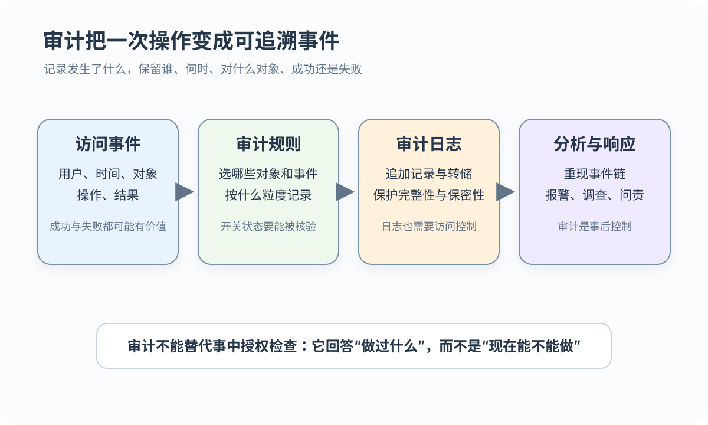

视图
视图隐藏不需要的行和列，但只有授予窗口权限时才形成有效边界
承接身份与授权：限制看见什么，记录做过什么，保护信息流
 VER. 2608.2
Built with impress.js
VER. 2608.2
Built with impress.js
视图、审计、加密、推理控制、隐私保护和分权分别限制数据访问、追踪行为与降低泄露风险
视图先限制行列范围，再通过最小权限控制操作；示例采用标准 SQL 语义
01
02
03
04
05
06
07
08
09
10
11
12
13
14-- 标准 SQL 示意；账号与主机格式需按当前 DBMS 核对
CREATE VIEW CS_Student
AS
SELECT Sno, Sname, Smajor
FROM Student
WHERE Smajor = '计算机科学与技术'
WITH CHECK OPTION;
GRANT SELECT
ON CS_Student
TO 王平;
-- 王平只有 SELECT；若张明获写权限，越出 WHERE 的写入应被拒绝
-- WITH CHECK OPTION 只约束通过该视图进行的写入视图缩小可见范围，GRANT 决定能做什么；若同时授予 Student 直达权限，用户可绕过这个窗口
一个数据窗口不能替代身份、授权、完整性和审计组成的安全控制链
视图隐藏不需要的行和列，但只有授予窗口权限时才形成有效边界
GRANT 限制 SELECT、INSERT、UPDATE、DELETE；基本表直达权限可能绕过窗口
基本表约束保证状态合法，CHECK OPTION 要求通过视图写入的数据仍满足视图谓词
身份鉴别与 DAC／MAC 决定谁能到达窗口；视图限制窗口，审计记录结果
审计不负责放行，而是记录访问和控制结果，使事件能够追溯和分析
审计可以记录普通用户、特权用户和认证失败中的尝试身份
审计可以记录登录、授权、DDL、DML、DCL 和对象访问
成功与失败都可能有价值，日志通常还要包含时间、对象和语句
记录越多，追溯能力越强、资源成本越高；管理责任与事件类型是两个分类轴
| 分类轴 | 关注问题 | 例子 |
|---|---|---|
| 责任范围 | 谁能设置、查看规则与日志 | DBA 配置；审计员查阅 |
| 认证事件 | 谁尝试登录以及是否成功 | 密码错误、成功登录 |
| 特权／授权事件 | 谁改变了安全规则 | GRANT、REVOKE、角色变化 |
| 语句与对象事件 | 对哪个对象做了什么 | UPDATE SC、ALTER、SELECT |
下例采用 KingbaseES 风格；具体语法与日志位置需要查产品手册

01
02
03
04-- [KingbaseES]，非 MySQL 8.4 通用 SQL
AUDIT ALTER, UPDATE ON SC BY ACCESS;
-- 测试成功／失败 UPDATE；查日志中的用户、时间、对象、语句和结果
NOAUDIT ALTER, UPDATE ON SC;审计规则的闭环包括开启规则、测试操作、核对日志和撤销规则；MySQL 8.4 需要按审计插件与部署核查，日志也需受到完整性、保密性和访问控制保护
明文经过算法变成密文，获得相应密钥的授权端再按规则解密
存储加密保护磁盘、备份和其他存储介质中的数据
传输加密保护客户端与服务器之间传输的信息
密钥管理需要处理保管、轮换、性能与恢复；密钥访问不等于数据库 SELECT 权限
加密保护数据形态，不替代最小权限和审计
机制选择取决于需要保护的数据所在位置
| 方式 | 保护范围 | 应用影响 |
|---|---|---|
| 透明存储加密 | 磁盘与存储层 | 应用通常无需改写 |
| 非透明存储加密 | 应用或数据库函数处理字段／值 | 需要改造应用并处理密钥 |
| 链路加密 | 每段链路的报头与报文 | 中间节点可能解密并重新加密 |
| 端到端加密 | 端点之间的报文内容 | 中间节点通常看不到内容；报头／元数据可能仍可见 |
这些描述是机制语义，不是当前 DBMS 的统一配置命令；产品、密钥位置和端点都要单独核对
这是 TLS／SSL 的概念流程，不等于数据库账户授权
证书验证确认通信端点，不等于数据库已有 SELECT 权限；账户、视图和 GRANT 仍决定服务器端能读写什么，实际选项属于产品／部署配置
推理控制关注用户能否从可见信息推出不应获得的结论
A：职务=教师，工资=3000（用户已知）
B：职务=教师，但工资字段受限
本例假设业务规则 职务 → 工资，所以可能推出 B 的工资为 3000
每条查询都可能获准，但组合关系仍可能越过边界；函数依赖是本例的明确假设，不是普遍事实
这是抽象安全模型，不是当前 Student／SC 的可执行脚本
| 机制 | 发送者／接收者动作 | 反馈编码与风险 |
|---|---|---|
| 唯一约束 | 高密级先写入或不写入 K；低密级再写 K | 成功／重复错误传递 1 比特 |
| 查询结果 | 接收者请求带隐藏状态的查询 | 行数或错误差异暴露状态 |
| 操作时序 | 观察者比较不同路径的响应时间 | 快慢差异形成时序侧信道 |
发布前要先识别准标识符和重新识别风险
收集与存储阶段只保留必要数据，并控制保存和访问
处理阶段要限制推理、关联和二次使用风险
出生年、性别和邮编等可以组成准标识符；若组合只对应一人，重识别风险较高
k 匿名让相同准标识符组合至少对应 k 条记录，但不保证绝对匿名；l 多样性和 t 临近是其他保护思路，匿名发布也不能替代授权、加密或审计
关键职责相互制约，安全操作更容易被复核
| 角色 | 主要职责 | 不应独立拥有的动作 |
|---|---|---|
| 系统管理员 | 账户、配置与平台维护 | 修改业务数据或删除审计记录 |
| 数据管理员 | 维护业务数据 | 独立修改安全策略或删除审计记录 |
| 审计员 | 读取并分析审计日志 | 修改业务数据或审计记录 |
分权降低单点失控风险，同时增加流程和协调成本；它不能消除串通、账户失陷或紧急授权风险
视图、审计、加密、隐私和分权分别保护数据范围、行为记录、信息形态、发布结果和管理职责，但都保留边界
视图和 GRANT 限制数据窗口与操作，但基本表直达权限会绕过窗口
授权决定放行或拒绝，审计记录成功与失败
加密保护数据在落盘或传输途中的形态，但不替代最小权限
推理控制、隐蔽信道控制、隐私保护和分权可以降低风险，但不能使风险归零
AUDIT／NOAUDIT 为何要标产品边界？